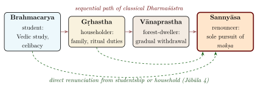

Chapter 8: The Sannyāsa Upaniṣads¶
8.1 Introduction: Renunciation in the Indian Tradition¶
The institution of sannyāsa (formal renunciation of worldly life in pursuit of liberation) is one of the most distinctive features of Brahmanical religion, developed in dialogue with the older ascetic orders of the Buddhists and Jains. The Sannyāsa Upaniṣads are a group of about seventeen to twenty texts in the Muktikā canon that give the rationale, ritual procedures, rules of conduct and spiritual practices of the renouncer (sannyāsin). They serve simultaneously as philosophical treatises and as manuals of conduct.
Their dates vary widely. Patrick Olivelle, whose translation is the standard scholarly treatment (Olivelle 1992), distinguishes an older group — including the Āruṇi, Laghu-Saṃnyāsa, Kaṇṭhaśruti, Paramahaṃsa, Jābāla and Brahma Upaniṣads — composed probably around the beginning of the Common Era, from a younger group composed in the medieval period, some of them (such as the Nāradaparivrājaka) many centuries later and heavily influenced by Advaita Vedānta. They are thus considerably later than the principal Upaniṣads, which know wandering ascetics but not the formal institution described here (Table 8.1).
| No. | Upaniṣad | Veda | Primary Focus |
|---|---|---|---|
| 1 | Jābāla | Śukla Yajurveda | Conditions for sannyāsa; the right to renounce |
| 2 | Āśrama | Atharvaveda | The four āśramas; transition to sannyāsa |
| 3 | Parama-Haṃsa | Śukla Yajurveda | The supreme renunciant; the wandering monk |
| 4 | Nāradaparivrājaka | Atharvaveda | Types of sannyāsins; their duties and conduct |
| 5 | Kaṇṭhaśruti (Kaṭhaśruti) | Kṛṣṇa Yajurveda | Ritual procedures of renunciation |
| 6 | Kuṇḍikā | Sāmaveda | Equipment and conduct of the sannyāsin |
| 7 | Brahma | Kṛṣṇa Yajurveda | The sannyāsin’s meditation on Brahman |
| 8 | Maitreya | Sāmaveda | Śiva’s teaching to the sage Maitreya on renunciation and the Self |
| 9 | Sannyāsa | Sāmaveda | Comprehensive rules of renunciation |
| 10 | Āruṇi | Sāmaveda | Internal vs. external sannyāsa |
8.2 The Philosophy of Renunciation¶
The philosophical basis of sannyāsa, as the later texts present it, rests upon the Vedāntic insight that if Brahman alone is real and the phenomenal world is a superimposition (adhyāsa) upon Brahman, then attachment to worldly objects, relationships and achievements is fundamentally misplaced. Its scriptural precedent is the Bṛhadāraṇyaka’s description of those who, knowing the Self, “give up the desire for sons, wealth and worlds and live the life of a mendicant” (3.5.1; cf. 4.4.22). Sannyāsa is the natural consequence of viveka (discrimination) and vairāgya (dispassion).
yad ahar eva virajet tad ahar eva pravrajet
Translation: “On that very day that dispassion (vairāgya) arises, one should renounce.”
— Jābāla Upaniṣad 4
This bold declaration from the Jābāla Upaniṣad is of great significance. Having first set out the orderly sequence (student, householder, forest-dweller, renouncer), the text adds that one may also renounce directly from studentship, from the household or from the forest: sannyāsa is not contingent upon completing the earlier āśramas. The question of whether this was permissible was hotly debated in Dharmaśāstra, where many authorities insisted on the sequence.
8.3 The Four Āśramas and the Place of Sannyāsa¶
The classical Dharmaśāstra theory organises the life of a twice-born man into four stages (āśramas). Olivelle has shown that this sequential scheme is itself a later reworking: in the earliest Dharmasūtras (c. 3rd–2nd century BCE) the āśramas were four alternative, lifelong ways of life chosen by an adult, and only later were they arranged as successive stages (Olivelle 1993). The scheme applied in theory to men of the three upper varṇas; women and Śūdras had no place in it (Figure 8.1).

8.4 The Parama-Haṃsa: The Supreme Renunciant¶
The Parama-Haṃsa Upaniṣad describes the highest type of sannyāsin — the parama-haṃsa (literally, “supreme swan”). The swan (haṃsa) is a powerful symbol in Indian tradition: it is said to possess the ability to separate milk from water, just as the realised soul separates the Real from the unreal. The paramahaṃsa abandons the topknot and the sacred thread, the marks of Brahmanical ritual status, and lives established in Brahman alone.
8.4.1 Types of Sannyāsins¶
The Sannyāsa Upaniṣads classify renunciants into several categories, based on their level of realisation and their mode of life (Table 8.2).
| Type | Meaning | Description |
|---|---|---|
| Kuṭīcaka | Hut-dweller | Lives in a fixed hermitage near a temple or village |
| Bahūdaka | Many-watered | Wanders from place to place, begging at many doors |
| Haṃsa | Swan | Wanders freely but with some minimal possessions |
| Parama-Haṃsa | Supreme Swan | Utterly free; beyond all conventions; absorbed in Brahman |
| Turīyātīta | Beyond the Fourth | Transcends even the four categories; beyond description |
| Avadhūta | The Shaken-off | Has shaken off all worldly bonds; the most radical form |
8.5 The Ritual of Sannyāsa Dīkṣā¶
The Kaṇṭhaśruti Upaniṣad and the Nāradaparivrājaka Upaniṣad provide descriptions of the ritual of sannyāsa initiation (dīkṣā), which later manuals elaborated further. The ceremony involves several solemn acts:
Prāyaścitta (Atonement): A final expiatory rite to absolve past transgressions
Virajā Homa (Fire sacrifice): The aspirant performs a final fire sacrifice, symbolically offering into the fire all worldly attachments
Prāṇāgnihotra: The internalisation of the sacrificial fire — henceforth, the renunciant’s own breath becomes the sacred fire
Giving up the sacred thread (yajñopavīta): The external markers of caste identity are renounced
Receiving the Mahāvākya: In later Advaita practice, the guru imparts a Great Saying to the new sannyāsin
Tri-daṇḍa or Eka-daṇḍa: The renunciant receives the triple staff (controlling body, speech, and mind) or the single staff
Declaration: The sannyāsin says “I have renounced” three times, then grants “fearlessness to all beings” (a vow of non-harm)
8.6 The Conduct of the Sannyāsin¶
The Sannyāsa Upaniṣads prescribe a detailed code of conduct for the renunciant. The Nāradaparivrājaka Upaniṣad is particularly comprehensive:
-
Dwelling: The sannyāsin should not settle in one place, staying only briefly in any village or town (except during the rainy season, cāturmāsya)
-
Food: Only alms (bhikṣā), begged from no more than a few houses (five or seven, according to different rules)
-
Possessions: A staff (daṇḍa), a water-pot (kamaṇḍalu), a loincloth (kaupīna), and an ochre-dyed cloth (kāṣāya vastra)
-
Speech: Measured, truthful, and beneficial; silence is preferred
-
Attitude: Equanimity towards honour and dishonour, praise and blame, pleasure and pain
-
Practice: Constant meditation on Brahman; study of the Upaniṣads; recitation of Oṃ
8.7 The Āruṇi Upaniṣad: Internal Renunciation¶
The Āruṇi Upaniṣad, one of the oldest of the group, has Āruṇi ask Prajāpati how he may give up ritual activity altogether; he is told to abandon his sons, relatives, topknot and sacred thread and to live as a mendicant devoted to the Self. Several later texts, together with the Gītā (5.3; 6.1), go further and insist that true renunciation is internal — a transformation of consciousness — rather than merely external.
The teaching implies that the essence of sannyāsa lies not in the outward trappings — the ochre robe, the shaven head, the begging bowl — but in the inner detachment from identification with the body-mind complex. A person may wear the ochre robe and yet be inwardly attached; conversely, a person may live in the world and yet be inwardly a sannyāsin.
8.8 The Avadhūta: The Radical Renunciant¶
The late Avadhūta Upaniṣad (attributed to the Kṛṣṇa Yajurveda) describes the most radical and unconventional form of sannyāsa. It explains the word avadhūta through a fourfold analysis of its syllables, each standing for a quality of the renouncer (Table 8.3).
| Syllable | Root Meaning | Significance |
|---|---|---|
| A | Akṣaratva | Being imperishable |
| Va | Vareṇyatva | Being most excellent, worthy of choice |
| Dhū | Dhūta-saṃsāra-bandhana | Having shaken off the bonds of worldly existence |
| Ta | Tat-tvam-asy-ādi-lakṣyatva | Being the referent of sayings such as “That thou art” |
The Avadhūta transcends all social conventions, all external observances, and even the normative codes of the other types of sannyāsins. Unlike the Kuṭīcaka who lives in a fixed hermitage, or the Bahūdaka who follows prescribed begging routes, the Avadhūta is utterly free — wandering without pattern, eating what comes without solicitation, wearing or not wearing clothing as the occasion arises, and remaining absorbed in Brahman regardless of external circumstances.
Philosophical Note
The figure of the Avadhūta represents the extreme logical consequence of Advaita non-dualism: if Brahman alone is real and the world is mithyā, then all social distinctions — caste, gender, propriety, convention — are ultimately without substance. Yet the texts that voice this ideal for the realised renouncer did not dismantle those distinctions in society, or even in the rules for who might renounce (see below). The divine sage Dattātreya, revered as the archetypal avadhūta and as the teacher in the Avadhūtagītā, personifies the ideal.
8.9 The Ethics of Renunciation¶
The Sannyāsa Upaniṣads prescribe rules, but they also ground them in an ethic: the recognition of the Ātman in all beings. The sannyāsin’s vow of abhaya-dāna (the gift of fearlessness to all beings) is of particular moral significance:
abhayaṃ sarvabhūtebhyo mattaḥ
Translation: “Fearlessness to all beings from me!”
— Āruṇi Upaniṣad 3, after the threefold “I have renounced” (saṃnyastaṃ mayā)
This declaration — uttered at the moment of renunciation — is an unconditional commitment to ahiṃsā (non-violence) at the most fundamental level. The sannyāsin pledges to be a source of fearlessness to every living being — not only refraining from causing harm but actively radiating the peace that comes from Self-knowledge (Table 8.4).
| Principle | Description and Source |
|---|---|
| Abhaya-dāna | Gift of fearlessness to all beings — the supreme ethical act of the renouncer |
| Sama-darśana | Equal vision towards all — seeing the Ātman equally in a brahmin, an outcaste, a cow, an elephant, and a dog (Bhagavad Gītā 5.18, echoing Upaniṣadic principles) |
| Nir-dvandva | Freedom from the pairs of opposites — pleasure and pain, heat and cold, honour and dishonour (Nāradaparivrājaka) |
| Nir-ahaṅkāra | Freedom from ego-identification — acting without the sense of personal doership (Parama-Haṃsa) |
| Satyavāditā | Truthfulness in all speech and conduct (Āruṇi) |
8.10 Sannyāsa in the Modern World¶
The institution of sannyāsa has adapted considerably in the modern era. The great reformers of the nineteenth and twentieth centuries — Svāmī Vivekānanda, Svāmī Dayānanda Sarasvatī (of the Ārya Samāj), Svāmī Śivānanda, Svāmī Chinmayānanda, and others — were all sannyāsins who brought the ancient institution into creative engagement with modernity. They established organisations, hospitals, schools, and global missions while maintaining the inner spirit of renunciation.
The modern sannyāsin faces distinctive challenges: the presence of mass media, the globalisation of culture, the expectations of institutional management, and the demands of a worldwide following. Yet the core teaching of the Sannyāsa Upaniṣads remains unchanged: true renunciation is internal. Whether one lives in a cave in Uttarakāṣī or manages a global spiritual organisation, the essence of sannyāsa is the recognition that “I am not this body, not this mind; I am the infinite Ātman.”
Scholarly Note
The historical and sociological study of Indian renunciation has produced a substantial body of modern scholarship. Patrick Olivelle’s The Āśrama System (1993) and his annotated translation of the Saṃnyāsa Upaniṣads (1992) are foundational academic works (Olivelle 1993, 1992), and G. S. Ghurye’s Indian Sadhus (1953) remains a useful survey of the living orders.
8.11 Who May Renounce? Caste and Gender¶
The ideal of renunciation proclaims that the Self is beyond all social distinctions, but the rules for entering the renunciant life were socially restrictive. Most Saṃnyāsa Upaniṣads simply assume a male renouncer of the twice-born classes, and many Dharmaśāstra authorities — as well as Śaṅkara in his commentaries — held that formal renunciation was open only to Brāhmaṇa men. The rites themselves presuppose this: the renouncer gives up the sacred thread and the domestic fires, which only an initiated twice-born man possessed. In the Daśanāmī orders that trace themselves to Śaṅkara, several branches long admitted only Brāhmaṇas, while others admitted non-Brāhmaṇas.
Women appear in the Upaniṣads as seekers — Maitreyī in the Bṛhadāraṇyaka chooses the knowledge of immortality over wealth — but the Saṃnyāsa Upaniṣads do not provide for women’s renunciation. (The Maitreya Upaniṣad of this group is named after a male sage, not after Maitreyī.) Women ascetics are nonetheless attested throughout Indian history, from the Buddhist and Jain orders of nuns to independent female renouncers in later Hindu traditions, and in modern times several Hindu orders have instituted formal sannyāsa for women (for example the Śrī Śāradā Maṭh, founded in 1954 in the Ramakrishna tradition). The gap between the egalitarian metaphysics of the Self and the exclusive social rules of renunciation is one of the tensions that modern Hindu reformers have sought to resolve. The Buddhist and Jain orders, which admitted members of all classes and established orders of nuns at an early date, provide an instructive contrast.
Oṃ Śāntiḥ Śāntiḥ Śāntiḥ